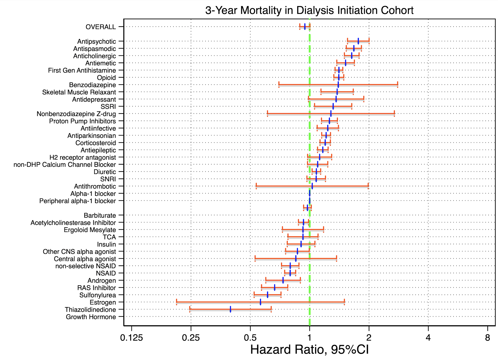

results#
1. Excel#
catalog 04/18/2019 - 08/01/2019
import 08/10/2019 -
export
1.1 xlsx#
5:43PM on 08/01/2019 by Stella
13-Nonbenzodiazepines - Z-drugs
3:11PM on 07/02/2019 by Lori
1.2 Import#
1.2.1 First#
import excel "1-first gen antihisitamines.xlsx", sheet("de-duplicated list") clear
drop in 1/6
replace A = strtrim(A)
replace A=ustrupper(A)
rename A drug_gnn
gen class_gnn="antihist"
keep *_gnn
gen group=1
save 01_antihistamines, replace
import excel "2-antiparkinsonian agents.xlsx", sheet("De-duplicated list") clear
drop in 1/6
replace A = strtrim(A)
replace A=ustrupper(A)
rename A drug_gnn
gen class_gnn="antipark"
keep *_gnn
gen group=2
save 02_antiparkinsons,replace
import excel "3-Antispasmodics.xlsx", sheet("De-duplicated_list") clear
drop in 1/7
replace A = strtrim(A)
replace A=ustrupper(A)
rename A drug_gnn
gen class_gnn="antispasm"
keep *_gnn
keep if !missing(drug)
gen group=3
save 03_antispasmodics,replace
import excel "4-Antithrombotics", sheet("De-duplicated_results") clear
drop in 1/7
replace A = strtrim(A)
replace A=ustrupper(A)
rename A drug_gnn
gen class_gnn="antithromb"
keep *_gnn
keep if !missing(drug)
gen group=4
save 04_antithrombotics,replace
import excel "5-antiinfective agents", sheet("Sheet2") clear
drop in 1/8
replace A = strtrim(A)
replace A=ustrupper(A)
rename A drug_gnn
gen class_gnn="antiinfect"
keep *_gnn
keep if !missing(drug)
gen group=5
save 05_antiinfective,replace
1.2.2 Second#
import excel "6-Peripheral alpha-1 blockers", sheet("De-duplicated_results") clear
drop in 1/6
replace A = strtrim(A)
replace A=ustrupper(A)
rename A drug_gnn
gen class_gnn="pera1block"
keep *_gnn
keep if !missing(drug)
gen group=6
save 06_peripheralalpha1blockers,replace
import excel "7-Central alpha-agonists", sheet("de-duplicated_list") clear
replace A = strtrim(A)
replace A=ustrupper(A)
rename A drug_gnn
gen class_gnn="cena1ag"
keep *_gnn
keep if !missing(drug)
gen group=7
save 07_centralalpha1agonists,replace
import excel "8-Other CNS alpha-agonists", sheet("De-duplicated_list") clear
replace A = strtrim(A)
replace A=ustrupper(A)
rename A drug_gnn
gen class_gnn="otha1ag"
keep *_gnn
keep if !missing(drug)
gen group=8
save 08_otheralpha1agonists,replace
import excel "9-Antidepressants", sheet("De-duplicated_results") clear
drop in 1/8
replace A = strtrim(A)
replace A=ustrupper(A)
rename A drug_gnn
gen class_gnn="antidep"
keep *_gnn
keep if !missing(drug)
gen group=9
save 09_antidepressants,replace
import excel "10-Antipsychotic agents", sheet("De-duplicated_results") clear
drop in 1/8
replace A = strtrim(A)
replace A=ustrupper(A)
rename A drug_gnn
gen class_gnn="antipsy"
keep *_gnn
keep if !missing(drug)
gen group=10
save 10_antipsychotics,replace
import excel "11-Barbituates", sheet("De-duplicated_results") clear
drop in 1/6
replace A = strtrim(A)
replace A=ustrupper(A)
rename A drug_gnn
gen class_gnn="barb"
keep *_gnn
keep if !missing(drug)
gen group=11
save 11_barbiturates,replace
1.2.3 Third#
import excel "12-Benzodiazepine lists", sheet("Short-acting") clear
drop in 1/7
replace A = strtrim(A)
replace A=ustrupper(A)
rename A drug_gnn
gen class_gnn="benzoshort"
keep *_gnn
keep if !missing(drug)
tempfile benzoshort
save `benzoshort',replace
import excel "12-Benzodiazepine lists", sheet("Long-acting") clear
drop in 1/8
replace A = strtrim(A)
replace A=ustrupper(A)
rename A drug_gnn
gen class_gnn="benzolong"
keep *_gnn
keep if !missing(drug)
tempfile benzolong
save `benzolong',replace
import excel "12-Benzodiazepine lists", sheet("Unknown") clear
drop in 1/7
replace A = strtrim(A)
replace A=ustrupper(A)
rename A drug_gnn
gen class_gnn="benzounk"
keep *_gnn
keep if !missing(drug)
tempfile benzounk
save `benzounk',replace
use `benzoshort',clear
append using `benzolong'
append using `benzounk'
gen group=12
save 12_benzodiazepines,replace
import excel "13-Nonbenzodiazepines - Z-drugs", sheet("De-duplicated_results") clear
drop in 1/6
replace A = strtrim(A)
replace A=ustrupper(A)
rename A drug_gnn
gen class_gnn="nonbenzo"
keep *_gnn
keep if !missing(drug)
gen group=13
save 13_nonbenzodiazepines,replace
1.2.4 Fourth#
import excel "14-Ergoloid Mesylates", sheet("De-duplicated_results") clear
drop in 1/7
replace A = strtrim(A)
replace A=ustrupper(A)
rename A drug_gnn
gen class_gnn="ergot"
keep *_gnn
keep if !missing(drug)
gen group=14
save 14_ergoloids,replace
import excel "15-Androgens", sheet("De-duplicated_results") clear
drop in 1/7
replace A = strtrim(A)
replace A=ustrupper(A)
rename A drug_gnn
gen class_gnn="andro"
keep *_gnn
keep if !missing(drug)
gen group=15
save 15_androgens,replace
import excel "16-Estrogens", sheet("De-duplicated_results") clear
drop in 1/6
replace A = strtrim(A)
replace A=ustrupper(A)
rename A drug_gnn
gen class_gnn="estro"
keep *_gnn
keep if !missing(drug)
gen group=16
save 16_estrogens,replace
import excel "17-Growth hormone", sheet("De-duplicated_results") clear
drop in 1/7
replace A = strtrim(A)
replace A=ustrupper(A)
rename A drug_gnn
gen class_gnn="growth"
keep *_gnn
keep if !missing(drug)
gen group=17
save 17_growthhormones,replace
import excel "18-Insulin", sheet("De-duplicated_results") clear
drop in 1/8
replace A = strtrim(A)
replace A=ustrupper(A)
rename A drug_gnn
gen class_gnn="insulin"
keep *_gnn
keep if !missing(drug)
gen group=18
save 18_insulin,replace
import excel "19-Sulfonylureas", sheet("De-duplicated_results") clear
drop in 1/5
replace A = strtrim(A)
replace A=ustrupper(A)
rename A drug_gnn
gen class_gnn="urea"
keep *_gnn
keep if !missing(drug)
gen group=19
save 19_sulfonylureas,replace
1.2.5 Five#
import excel "20-38", sheet("20.Proton_Pump_Inhibitors") clear
drop in 1/1
replace A = strtrim(A)
replace A=ustrupper(A)
rename A drug_gnn
gen class_gnn="ppi"
keep *_gnn
keep if !missing(drug)
gen group=20
save 20_protonpumpinh,replace
import excel "20-38", sheet("21.non-selective NSAIDS") clear
drop in 1/1
replace A = strtrim(A)
replace A=ustrupper(A)
rename A drug_gnn
gen class_gnn="nsnsaids"
keep *_gnn
keep if !missing(drug)
gen group=21
save 21_nonselectnsaids,replace
import excel "20-38", sheet("22.Skeletal muscle relaxants") clear
drop in 1/2
replace A = strtrim(A)
replace A=ustrupper(A)
rename A drug_gnn
gen class_gnn="muscle"
keep *_gnn
keep if !missing(drug)
gen group=22
save 22_musclerelaxants,replace
import excel "20-38", sheet("23.non-DHP CCB") clear
drop in 1/1
replace A = strtrim(A)
replace A=ustrupper(A)
rename A drug_gnn
gen class_gnn="ccb"
keep *_gnn
keep if !missing(drug)
gen group=23
save 23_nondhpccb,replace
import excel "20-38", sheet("24.Thiazolidinediones") clear
drop in 1/1
replace A = strtrim(A)
replace A=ustrupper(A)
rename A drug_gnn
gen class_gnn="thiazo"
keep *_gnn
keep if !missing(drug)
gen group=24
save 24_thiazolidinediones,replace
import excel "20-38", sheet("25.Acetyl cholinesterase inhib") clear
drop in 1/1
replace A = strtrim(A)
replace A=ustrupper(A)
rename A drug_gnn
gen class_gnn="achblock"
keep *_gnn
keep if !missing(drug)
gen group=25
save 25_acetylcholinesteraseinh,replace
import excel "20-38", sheet("26.alpha-1 blockers") clear
drop in 1/1
replace A = strtrim(A)
replace A=ustrupper(A)
rename A drug_gnn
gen class_gnn="a1block"
keep *_gnn
keep if !missing(drug)
gen group=26
save 26_alpha1blockers,replace
import excel "20-38", sheet("27.ti-cyclic antidepressants") clear
drop in 1/1
replace A = strtrim(A)
replace A=ustrupper(A)
rename A drug_gnn
gen class_gnn="tca"
keep *_gnn
keep if !missing(drug)
gen group=27
save 27_tca,replace
import excel "20-38", sheet("28.corticosteroids") clear
drop in 1/1
replace A = strtrim(A)
replace A=ustrupper(A)
rename A drug_gnn
gen class_gnn="steroids"
keep *_gnn
keep if !missing(drug)
gen group=28
save 28_corticosteroids,replace
import excel "20-38", sheet("29.H2 receptor antagonists") clear
drop in 1/1
replace A = strtrim(A)
replace A=ustrupper(A)
rename A drug_gnn
gen class_gnn="h2ant"
keep *_gnn
keep if !missing(drug)
gen group=29
save 29_h2rblockers,replace
import excel "20-38", sheet("30.antiepileptics") clear
drop in 1/1
replace A = strtrim(A)
replace A=ustrupper(A)
rename A drug_gnn
gen class_gnn="antiepi"
keep *_gnn
keep if !missing(drug)
gen group=30
save 30_antiepileptics,replace
1.2.6. Sixth#
import excel "20-38", sheet("31.antiemetics") clear
drop in 1/1
replace A = strtrim(A)
replace A=ustrupper(A)
rename A drug_gnn
gen class_gnn="antieme"
keep *_gnn
keep if !missing(drug)
gen group=31
save 31_antiemetics,replace
import excel "20-38", sheet("32.NSAIDS") clear
drop in 1/1
replace A = strtrim(A)
replace A=ustrupper(A)
rename A drug_gnn
gen class_gnn="nsaid"
keep *_gnn
keep if !missing(drug)
gen group=32
save 32_nsaids,replace
import excel "20-38", sheet("33.Diuretics") clear
drop in 1/1
replace A = strtrim(A)
replace A=ustrupper(A)
rename A drug_gnn
gen class_gnn="diuretics"
keep *_gnn
keep if !missing(drug)
gen group=33
save 33_diuretics,replace
import excel "20-38", sheet("34.SNRIs") clear
drop in 1/1
replace A = strtrim(A)
replace A=ustrupper(A)
rename A drug_gnn
gen class_gnn="snri"
keep *_gnn
keep if !missing(drug)
gen group=34
save 34_snri,replace
import excel "20-38", sheet("35.SSRIs") clear
drop in 1/1
replace A = strtrim(A)
replace A=ustrupper(A)
rename A drug_gnn
gen class_gnn="ssri"
keep *_gnn
keep if !missing(drug)
gen group=35
save 35_ssri,replace
1.2.7 Seventh#
import excel "20-38", sheet("36.RAS Inhibitor") clear
drop in 1/2
replace A = strtrim(A)
replace A=ustrupper(A)
rename A drug_gnn
gen class_gnn="ras"
keep *_gnn
keep if !missing(drug)
gen group=36
save 36_rasinhibitors,replace
import excel "20-38", sheet("37.Opioids") clear
drop in 1/1
replace A = strtrim(A)
replace A=ustrupper(A)
rename A drug_gnn
gen class_gnn="opioids"
keep *_gnn
keep if !missing(drug)
gen group=37
save 37_opioids,replace
import excel "20-38", sheet("38.Anticholinergic") clear
drop in 1/1
replace A = strtrim(A)
replace A=ustrupper(A)
rename A drug_gnn
gen class_gnn="antich"
keep *_gnn
keep if !missing(drug)
gen group=38
save 38_anticholinergics,replace
1.2.8 Alternative#
One script that achieves 1.2.1 - 1.2.7
Inspired by ph.340.600 & ph.340.700
Reduces lines of code from 440 - 182
Supposedly improves:
legibility
generalizability
quality of life
qui {
qui {
clear
cls
if c(N) { //background
we compiled a comprehensive list of medications within
each of the potentially inapporpriate medication (pim)
classes in a systematic manner.
first, informaticists used micromedex, the control vocabularies of medline and embase, and medication websites to generate
a trade and generic medication name list.
second, this list was curated to allow medications with multiple
mechanisms of action to be represented in more than one pim class.
we removed pims with topical or ocular routes of administration.
the final list was **imported into stata** to query
medicare part d claims for pims...
}
if c(N)<1 { //methods
global workdir `c(pwd)'
if c(os)=="Windows" {
global workdir "$workdir\"
}
else {
global workdir "$workdir/"
}
#delimit ;
global catalog1
"1-first gen antihisitamines"
"2-antiparkinsonian agents"
"3-Antispasmodics"
"4-Antithrombotics"
"5-antiinfective agents"
"6-Peripheral alpha-1 blockers"
"7-Central alpha-agonists"
"8-Other CNS alpha-agonists"
"9-Antidepressants"
"10-Antipsychotic agents"
"11-Barbituates"
"12-Benzodiazepine lists"
"12-Benzodiazepine lists"
"12-Benzodiazepine lists"
"13-Nonbenzodiazepines - Z-drugs"
"14-Ergoloid Mesylates"
"15-Androgens"
"16-Estrogens"
"17-Growth hormone"
"18-Insulin"
"19-Sulfonylureas"
;
global catalog2
"20.Proton_Pump_Inhibitors"
"21.non-selective NSAIDS"
"22.Skeletal muscle relaxants"
"23.non-DHP CCB"
"24.Thiazolidinediones"
"25.Acetyl cholinesterase inhib"
"26.alpha-1 blockers"
"27.ti-cyclic antidepressants"
"28.corticosteroids"
"29.H2 receptor antagonists"
"30.antiepileptics"
"31.antiemetics"
"32.NSAIDS"
"33.Diuretics"
"34.SNRIs"
"35.SSRIs"
"36.RAS Inhibitor"
"37.Opioids"
"38.Anticholinergic";
global namelist1
01_antihistamines
02_antiparkinsons
03_antispasmodics
04_antithrombotics
05_antiinfective
06_peripheralalpha1blockers
07_centralalpha1agonists
08_otheralpha1agonists
09_antidepressants
10_antipsychotics
11_barbiturates
benzoshort
benzolong
benzounk
13_nonbenzodiazepines
14_ergoloids
15_androgens
16_estrogens
17_growthhormones
18_insulin
19_sulfonylureas;
global namelist2
20_protonpumpinh
21_nonselectnsaids
22_musclerelaxants
23_nondhpccb
24_thiazolidinediones
25_acetylcholinesteraseinh
26_alpha1blockers
27_tca
28_corticosteroids
29_h2rblockers
30_antiepileptics
31_antiemetics
32_nsaids
33_diuretics
34_snri
35_ssri
36_rasinhibitors
37_opioids
38_anticholinergics;
#delimit cr
capture log close
log using "${workdir}01_bc050523.log",replace
set max_memory .
}
if c(N)==0 { //results
local group=1
foreach class in "$catalog1" {
import excel "${workdir}`class'.xlsx", clear
drop in 1/6
replace A=strtrim(A)
replace A=ustrupper(A)
rename A drug_gnn
local class_tidy: di word("$namelist1",`group')
g class_gnn="`class_tidy'"
capture split class_gnn,p("_")
capture keep drug_gnn class_gnn2
if inrange(`group',1,11) {
g group=`group'
}
else {
g group=`group'-2
}
keep if !missing(drug)
local filename: di word("$namelist1",`group')
capture save "`filename'",replace
noi di "`filename'"
local group=`group'+1
}
use benzoshort,clear
append using benzolong
append using benzounk //debug
replace group=12
drop class_gnn
rename class_gnn1 class_gnn2
save 12_benzodiazepines,replace
}
clear
if c(N)==0 {
local group=1
foreach class in "$catalog2" {
import excel "${workdir}20-38.xlsx", /*
*/ sheet("`class'") clear
drop in 1/1
replace A=strtrim(A)
replace A=ustrupper(A)
rename A drug_gnn
local class_tidy: di word("$namelist2",`group')
g class_gnn="`class_tidy'"
capture split class_gnn,p("_")
capture keep drug_gnn class_gnn2
g group=`group'+19
keep if !missing(drug)
local filename: di word("$namelist2",`group')
capture save "`filename'",replace
noi di "`filename'"
local group=`group'+1
}
}
cls
rm benzoshort.dta
rm benzolong.dta
rm benzounk.dta
noi ls *.dta
timer list
log close
}
}
1.2.9. logfile#
01_antihistamines
02_antiparkinsons
03_antispasmodics
04_antithrombotics
05_antiinfective
06_peripheralalpha1blockers
07_centralalpha1agonists
08_otheralpha1agonists
09_antidepressants
10_antipsychotics
11_barbiturates
benzoshort
benzolong
benzounk
13_nonbenzodiazepines
14_ergoloids
15_androgens
16_estrogens
17_growthhormones
18_insulin
19_sulfonylureas
20_protonpumpinh
21_nonselectnsaids
22_musclerelaxants
23_nondhpccb
24_thiazolidinediones
25_acetylcholinesteraseinh
26_alpha1blockers
27_tca
28_corticosteroids
29_h2rblockers
30_antiepileptics
31_antiemetics
32_nsaids
33_diuretics
34_snri
35_ssri
36_rasinhibitors
37_opioids
38_anticholinergics
-rw-r--r--@ 1 d staff 166833 May 8 23:01 01_antihistamines.dta
-rw-r--r--@ 1 d staff 39999 May 8 23:01 02_antiparkinsons.dta
-rw-r--r--@ 1 d staff 34507 May 8 23:01 03_antispasmodics.dta
-rw-r--r--@ 1 d staff 88035 May 8 23:01 04_antithrombotics.dta
-rw-r--r--@ 1 d staff 365469 May 8 23:01 05_antiinfective.dta
-rw-r--r--@ 1 d staff 25663 May 8 23:01 06_peripheralalpha1blockers.dta
-rw-r--r--@ 1 d staff 12151 May 8 23:01 07_centralalpha1agonists.dta
-rw-r--r--@ 1 d staff 5247 May 8 23:01 08_otheralpha1agonists.dta
-rw-r--r--@ 1 d staff 156447 May 8 23:01 09_antidepressants.dta
-rw-r--r--@ 1 d staff 232398 May 8 23:01 10_antipsychotics.dta
-rw-r--r--@ 1 d staff 59112 May 8 23:01 11_barbiturates.dta
-rw-r--r--@ 1 d staff 165070 May 8 23:01 12_benzodiazepines.dta
-rw-r--r--@ 1 d staff 21510 May 8 23:01 13_nonbenzodiazepines.dta
-rw-r--r--@ 1 d staff 21290 May 8 23:01 14_ergoloids.dta
-rw-r--r--@ 1 d staff 26103 May 8 23:01 15_androgens.dta
-rw-r--r--@ 1 d staff 54036 May 8 23:01 16_estrogens.dta
-rw-r--r--@ 1 d staff 32403 May 8 23:01 17_growthhormones.dta
-rw-r--r--@ 1 d staff 35161 May 8 23:01 18_insulin.dta
-rw-r--r--@ 1 d staff 10875 May 8 23:01 19_sulfonylureas.dta
-rw-r--r--@ 1 d staff 3879 May 8 23:01 20_protonpumpinh.dta
-rw-r--r--@ 1 d staff 3495 May 8 23:01 21_nonselectnsaids.dta
-rw-r--r--@ 1 d staff 7311 May 8 23:02 22_musclerelaxants.dta
-rw-r--r--@ 1 d staff 2652 May 8 23:02 23_nondhpccb.dta
-rw-r--r--@ 1 d staff 2631 May 8 23:02 24_thiazolidinediones.dta
-rw-r--r--@ 1 d staff 10323 May 8 23:02 25_acetylcholinesteraseinh.dta
-rw-r--r--@ 1 d staff 8169 May 8 23:02 26_alpha1blockers.dta
-rw-r--r--@ 1 d staff 4659 May 8 23:02 27_tca.dta
-rw-r--r--@ 1 d staff 10527 May 8 23:02 28_corticosteroids.dta
-rw-r--r--@ 1 d staff 3954 May 8 23:02 29_h2rblockers.dta
-rw-r--r--@ 1 d staff 11043 May 8 23:02 30_antiepileptics.dta
-rw-r--r--@ 1 d staff 6259 May 8 23:02 31_antiemetics.dta
-rw-r--r--@ 1 d staff 58849 May 8 23:02 32_nsaids.dta
-rw-r--r--@ 1 d staff 7920 May 8 23:02 33_diuretics.dta
-rw-r--r--@ 1 d staff 3267 May 8 23:02 34_snri.dta
-rw-r--r--@ 1 d staff 5317 May 8 23:02 35_ssri.dta
-rw-r--r--@ 1 d staff 6775 May 8 23:02 36_rasinhibitors.dta
-rw-r--r--@ 1 d staff 9513 May 8 23:02 37_opioids.dta
-rw-r--r-- 1 d staff 19039 May 8 23:02 38_anticholinergics.dta
1.3 Append#
clear
use 01_antihistamines
append using 02_antiparkinsons
append using 03_antispasmodics
append using 04_antithrombotics
append using 05_antiinfective
append using 06_peripheralalpha1blockers
append using 07_centralalpha1agonists
append using 08_otheralpha1agonists
append using 09_antidepressants
append using 10_antipsychotics
append using 11_barbiturates
append using 12_benzodiazepines
append using 13_nonbenzodiazepines
append using 14_ergoloids
append using 15_androgens
append using 16_estrogens
append using 17_growthhormones
append using 18_insulin
append using 19_sulfonylureas
append using 20_protonpumpinh
append using 21_nonselectnsaids
append using 22_musclerelaxants
append using 23_nondhpccb
append using 24_thiazolidinediones
append using 25_acetylcholinesteraseinh
append using 26_alpha1blockers
append using 27_tca
append using 28_corticosteroids
append using 29_h2rblockers
append using 30_antiepileptics
append using 31_antiemetics
append using 32_nsaids
append using 33_diuretics
append using 34_snri
append using 35_ssri
append using 36_rasinhibitors
append using 37_opioids
append using 38_anticholinergics
duplicates drop
drop if missing(drug_gnn)
tab class_gnn
forvalues i=1/38 {
preserve
keep if group==`i'
gen var1="gen"
gen var2=class_gnn
gen var3=_n
gen var4="=(strpos(gnn,"
gen var5="="
gen var6=drug_gnn
gen var7="="
gen var8=")!=0)"
tostring var3,replace
replace var2=var2+var3+var4+var5+var6+var7+var8
keep var1 var2
export delimited using "`i'.class.txt", delimiter(tab) novarnames replace
restore
}
1.4 Create#
clear
set obs 1012
gen v1="antiinfect"
gen v2=_n
gen v3="+"
gen v4="///"
tostring v2,replace
replace v1=v1+v2+v3
keep v1 v4
export delimited using "05_antiinfective.txt", delimiter(tab) novarnames replace
2. Renaldata#
2.1. dofiles#
2.2. Queue#
do 01_antihistamines_expR.do
do 02_antiparkinsons_expR.do
do 03_antispasmodics_expR.do
do 04_antithrombotics_expR.do
do 05_antiinfective_expR.do
do 06_peripheralalpha1blockers_expR.do
do 07_centralalpha1agonists_expR.do
do 08_otheralpha1agonists_expR.do
do 09_antidepressants_expR.do
do 10_antipsychotics_expR.do
do 11_barbiturates_expR.do
do 12_benzodiazepines_expR.do
do 13_nonbenzodiazepines_expR.do
do 14_ergoloids_expR.do
do 15_androgens_expR.do
do 16_estrogens_expR.do
do 17_growthhormones_expR.do
do 18_insulin_expR.do
do 19_sulfonylureas_expR.do
do 20_protonpumpinh_expR.do
do 21_nonselectnsaids_expR.do
do 22_musclerelaxants_expR.do
do 23_nondhpccb_expR.do
do 24_thiazolidinediones_expR.do
do 25_acetylcholinesteraseinh_expR.do
do 26_alpha1blockers_expR.do
do 27_tca_expR.do
do 28_corticosteroids_expR.do
do 29_h2rblockers_expR.do
do 30_antiepileptics_expR.do
do 31_antiemetics_expR.do
do 32_nsaids_expNA.do
do 33_diuretics_expR.do
do 34_snri_expR.do
do 35_ssri_expR.do
do 36_rasinhibitors_expR.do
do 37_opioids_expR.do
do 38_anticholinergics_expR.do
2.3. Exposure#
use 01_antihistamines_expR.dta,clear
merge m:m usrds_id using 02_antiparkinsons_expR.dta,keep(matched) nogen
merge m:m usrds_id using 03_antispasmodics_expR.dta,keep(matched) nogen
merge m:m usrds_id using 04_antithrombotics_expR.dta,keep(matched) nogen
merge m:m usrds_id using 05_antiinfective_expR.dta,keep(matched) nogen
merge m:m usrds_id using 06_peripheralalpha1blockers_expR.dta,keep(matched) nogen
merge m:m usrds_id using 07_centralalpha1agonists_expR.dta,keep(matched) nogen
merge m:m usrds_id using 08_otheralpha1agonists_expR.dta,keep(matched) nogen
merge m:m usrds_id using 09_antidepressants_expR.dta,keep(matched) nogen
merge m:m usrds_id using 10_antipsychotics_expR.dta,keep(matched) nogen
merge m:m usrds_id using 11_barbiturates_expR.dta,keep(matched) nogen
merge m:m usrds_id using 12_benzodiazepines_expR.dta,keep(matched) nogen
merge m:m usrds_id using 13_nonbenzodiazepines_expR.dta,keep(matched) nogen
merge m:m usrds_id using 14_ergoloids_expR.dta,keep(matched) nogen
merge m:m usrds_id using 15_androgens_expR.dta,keep(matched) nogen
merge m:m usrds_id using 16_estrogens_expR.dta,keep(matched) nogen
merge m:m usrds_id using 17_growthhormones_expR.dta,keep(matched) nogen
merge m:m usrds_id using 18_insulin_expR.dta,keep(matched) nogen
merge m:m usrds_id using 19_sulfonylureas_expR.dta,keep(matched) nogen
merge m:m usrds_id using 20_protonpumpinh_expR.dta,keep(matched) nogen
merge m:m usrds_id using 21_nonselectnsaids_expR.dta,keep(matched) nogen
merge m:m usrds_id using 22_musclerelaxants_expR.dta,keep(matched) nogen
merge m:m usrds_id using 23_nondhpccb_expR.dta,keep(matched) nogen
merge m:m usrds_id using 24_thiazolidinediones_expR.dta,keep(matched) nogen
merge m:m usrds_id using 25_acetylcholinesteraseinh_expR.dta,keep(matched) nogen
merge m:m usrds_id using 26_alpha1blockers_expR.dta,keep(matched) nogen
merge m:m usrds_id using 27_tca_expR.dta,keep(matched) nogen
merge m:m usrds_id using 28_corticosteroids_expR.dta,keep(matched) nogen
merge m:m usrds_id using 29_h2rblockers_expR.dta,keep(matched) nogen
merge m:m usrds_id using 30_antiepileptics_expR.dta,keep(matched) nogen
merge m:m usrds_id using 31_antiemetics_expR.dta,keep(matched) nogen
merge m:m usrds_id using 32_nsaids_expR.dta,keep(matched) nogen
merge m:m usrds_id using 33_diuretics_expR.dta,keep(matched) nogen
merge m:m usrds_id using 34_snri_expR.dta,keep(matched) nogen
merge m:m usrds_id using 35_ssri_expR.dta,keep(matched) nogen
merge m:m usrds_id using 36_rasinhibitors_expR.dta,keep(matched) nogen
merge m:m usrds_id using 37_opioids_expR.dta,keep(matched) nogen
merge m:m usrds_id using 38_anticholinergics_expR.dta,keep(matched) nogen
duplicates drop
compress
save 00_exposureR,replace
if 0 {
1 antihist
2 antipark
3 antispasm
4 antithromb
5 antiinfect
6 pera1block
7 cena1ag1
8 otha1ag1
9 antidep
10 antipsy
11 barb
12 benzo
13 nonbenzo
14 ergot
15 andro
16 estro
17 growth
18 insulin
19 urea
20 ppi
21 nsnsaids
22 muscle
23 ccb
24 thiazo
25 achblock
26 a1block
27 tca
28 steroids
29 h2ant
30 antiepi
31 antieme
32 nsaid
33 diuretics
34 snri
35 ssri
36 ras
37 opioids
38 antich
}
3. Unsupervised#
qui {
qui {
clear
cls
if c(N) { //background
we compiled a comprehensive list of medications within
each of the potentially inapporpriate medication (pim)
classes in a systematic manner.
first, informaticists used micromedex, the control vocabularies of medline and embase, and medication websites to generate
a trade and generic medication name list.
second, this list was curated to allow medications with multiple
mechanisms of action to be represented in more than one pim class.
we removed pims with topical or ocular routes of administration.
the final list was **imported into stata** to query
medicare part d claims for pims...
}
if c(N)<1 { //methods
global workdir `c(pwd)'
if c(os)=="Windows" {
global workdir "$workdir\"
}
else {
global workdir "$workdir/"
}
#delimit ;
global catalog
"1-first gen antihisitamines"
"2-antiparkinsonian agents"
"3-Antispasmodics"
"4-Antithrombotics"
"5-antiinfective agents"
"6-Peripheral alpha-1 blockers"
"7-Central alpha-agonists"
"8-Other CNS alpha-agonists"
"9-Antidepressants"
"10-Antipsychotic agents"
"11-Barbituates"
"12-Benzodiazepine lists"
"12-Benzodiazepine lists"
"12-Benzodiazepine lists"
"13-Nonbenzodiazepines - Z-drugs"
"14-Ergoloid Mesylates"
"15-Androgens"
"16-Estrogens"
"17-Growth hormone"
"18-Insulin"
"19-Sulfonylureas"
"20.Proton_Pump_Inhibitors"
"21.non-selective NSAIDS"
"22.Skeletal muscle relaxants"
"23.non-DHP CCB"
"24.Thiazolidinediones"
"25.Acetyl cholinesterase inhib"
"26.alpha-1 blockers"
"27.ti-cyclic antidepressants"
"28.corticosteroids"
"29.H2 receptor antagonists"
"30.antiepileptics"
"31.antiemetics"
"32.NSAIDS"
"33.Diuretics"
"34.SNRIs"
"35.SSRIs"
"36.RAS Inhibitor"
"37.Opioids"
"38.Anticholinergic";
#delimit cr
capture log close
log using "${workdir}01_bc050523.log",replace
set max_memory .
}
if c(N)==0 { //results
local group=1
foreach class in "$catalog" {
if inrange(`group',1,9) {
import excel "${workdir}`class'.xlsx", clear
//noi di "`class'"
local class_tidy: di lower(substr("`class'",3,.))
noi di "`class_tidy'"
local group=`group'+1
}
else if inrange(`group',10,11) {
import excel "${workdir}`class'.xlsx", clear
//noi di "`class'"
local class_tidy: di lower(substr("`class'",4,.))
noi di "`class_tidy'"
local group=`group'+1
}
else if inrange(`group',12,21) {
import excel "${workdir}`class'.xlsx", clear
//noi di "`class'"
local class_tidy: di lower(substr("`class'",4,.))
noi di "`class_tidy'"
local group=`group'+1
}
else {
import excel "${workdir}20-38.xlsx", /*
*/ sheet("`class'") clear
//noi di "`class'"
local class_tidy: di lower(substr("`class'",4,.))
noi di "`class_tidy'"
local group=`group'+1
}
}
//still upgrading...
noi assert 0
drop in 1/6
replace A=strtrim(A)
replace A=ustrupper(A)
rename A drug_gnn
local class_tidy: di lower(substr("`class'",3,.))
g class_gnn="`class_tidy'"
capture split class_gnn,p("_")
capture keep drug_gnn class_gnn2
g group=`i'
keep if !missing(drug)
local filename: di lower(substr("`class'",3,.))
capture save "0`i'_`filename'",replace
noi di "0`i_`filename'"
}
else if inrange(`group',10,11) {
import excel "${workdir}`class'.xlsx", clear
drop in 1/6
replace A=strtrim(A)
replace A=ustrupper(A)
rename A drug_gnn
local class_tidy: di lower(substr("`class'",4,.))
g class_gnn="`class_tidy'"
capture split class_gnn,p("_")
capture keep drug_gnn class_gnn2
g group=`group'
keep if !missing(drug)
local filename: di lower(substr("`class'",4,.))
capture save "`group'_`filename'",replace
noi di "`group'_`filename'"
local group=`group'+1
}
else if inrange(`group',12,14) {
capture save "`filename'`group'",replace
noi di "`filename'`group'"
local group=`group'+1
}
else {
local group2=`group'-2
capture save "`group2'_`filename'",replace
noi di "`group2'_`filename'"
local group=`group'+1
}
g group=`group2'
}
else {
import excel "${workdir}20-38.xlsx", /*
*/ sheet("`class'") clear
local group2=`group'-2
drop in 1/1
replace A=strtrim(A)
replace A=ustrupper(A)
rename A drug_gnn
local class_tidy: di lower(substr("`class'",4,.))
g class_gnn="`class_tidy'"
capture split class_gnn,p("_")
capture keep drug_gnn class_gnn2
//g group=`group'+19
keep if !missing(drug)
local filename: di lower(substr("`class'",4,.))
capture save "`group2'_`filename'",replace
noi di "`group2'_`filename'"
local group=`group'+1
g group=`group2'-2
}
local group=`group'+1
}
}
clear
append using "benzodiazepine lists12" //short
append using "benzodiazepine lists13" //long
append using "benzodiazepine lists14" //unk
//replace group=12
drop class_gnn
rename class_gnn1 class_gnn2
save 12_benzodiazepines,replace
}
cls
rm "benzodiazepine lists12.dta"
rm "benzodiazepine lists13.dta"
rm "benzodiazepine lists14.dta"
noi ls //*.dta
timer list
log close
}
//}
3.1 Eligibility#
qui {
qui {
clear
if c(N) {
payer history to determine eligibility
}
if c(N)<1 {
global core2015 "/dcs01/igm/segevlab/data/usrds2015/core"
global core2016 "/dcs01/igm/segevlab/data/usrds2016/core"
global startelig=d(01jan2013)
global endelig=d(31dec2014)
}
forvalues y=2015/2016 {
if `y'==2015 {
capture use 2015/payhist ///
if inlist(payer,"MPAB","MPO"),clear
if _rc==0 di "file patients`y' loading complete"
}
else if `y'==2016 {
if _rc==0 di "file patients`y' loading complete"
capture use 2016/payhist ///
if inlist(payer,"MPAB","MPO"),clear
}
if _rc==0 di "file patients`y' merging ..."
save `01_criteria_elig`y'',replace
}
forvalues y=2015/2016 {
capture append using `01_criteria_elig`y''
}
bys usrds_id: egen elig=min(begdate)
format elig %td
keep if inrange(elig,$startelig,$endelig)
gen dualeligible=dualelig=="Y"
drop dualelig
quietly compress
duplicates drop
save 11_eligR,replace
}
}
3.2 Employ#
qui {
qui {
clear
if c(N) {
medevid
}
if c(N)<1 {
global core15 "/dcs01/igm/segevlab/data/usrds2015/core"
global core16 "/dcs01/igm/segevlab/data/usrds2016/core"
global startexp=d(01jan2013)
global endexp=d(31dec2014)
global censor=d(30sep2015)
tempfile medevid2015 medevid2016
}
forvalues y=2015/2016 {
if `y'==2015 {
capture use usrds_id como_* crdate pdis bmi empcur ///
empgrp using 2015/medevid.dta if ///
inrange(crdate,$startexp,$endexp),clear
if _rc==0 di "file MEDEVID`y' loading complete"
}
else if `y'==2016 {
capture use usrds_id como_* crdate pdis bmi empcur empgrp ///
using $core16/medevid.dta if ///
inrange(crdate,$startexp,$endexp),clear
if _rc==0 di "file MEDEVID`y' loading complete"
}
if _rc==0 di "file MEDEVID`y' processing ..."
save `medevid`y'',replace
}
forvalues y=2015/2016 {
capture append using `medevid`y''
}
keep *_id empcur
g employ_emp=1 if empcur=="1"
forvalues i=2/9 {
quietly replace employ_emp=`i' if empcur=="`i'"
}
gen un_emp=employ==1
gen ft_emp=employ==2
gen pt_emp=employ==3
gen hm_emp=employ==4
gen rt_emp=employ==5
gen di_emp=employ==6
gen me_emp=employ==7
gen st_emp=employ==8
gen ot_emp=employ==9
duplicates drop
sort usrds_id
keep *_id *_emp
quietly compress
duplicates drop
save 12_employR,replace
}
}
3.3 Medev#
qui {
qui {
clear
if c(N) {
medevid
}
if c(N)<1 {
di "$S_TIME"
global core15 "/dcs01/igm/segevlab/data/usrds2015/core"
global core16 "/dcs01/igm/segevlab/data/usrds2016/core"
global startexp=d(01jan2013)
global endexp=d(31dec2014)
global censor=d(30sep2015)
tempfile medevid2015 medevid2016
}
forvalues y=2015/2016 {
if `y'==2015 {
capture use usrds_id como_* crdate pdis bmi empcur ///
empgrp using 2015/medevid.dta if ///
inrange(crdate,$startexp,$endexp),clear
if _rc==0 di "file MEDEVID`y' loading complete"
}
else if `y'==2016 {
capture use usrds_id como_* crdate pdis bmi empcur ///
empgrp using 2016/medevid.dta if ///
inrange(crdate,$startexp,$endexp),clear
if _rc==0 di "file MEDEVID`y' loading complete"
}
foreach como of varlist *_othcard *_chf *_cvatia *_ashd ///
*_htn *_pvd *_dm_nomeds *_dm_oral *_dm_ins *_copd ///
*_tobac *_alcho *_drug *_canc *_needasst *_inamb ///
*_inst *_inst_al *_inst_nurs *_inst_oth *_none {
quietly gen `como'_03=`como'=="Y"
}
egen flag=rowtotal(*_03)
keep *_id *_03 bmi
rename bmi bmi_comb
if _rc==0 di "file MEDEVID`y' processing ..."
save `medevid`y'',replace
}
forvalues y=2015/2016 {
capture append using `medevid`y''
}
collapse (max) *_03 bmi,by(usrds_id)
gen dm_comb=como_dm_nomeds_03+como_dm_oral_03+como_dm_ins_03>0
gen cvd_comb=como_othcard_03+como_chf_03+como_cvatia_03+como_ashd_03>0
gen pvd_comb=como_pvd_03>0
gen htn_comb=como_htn_03>0
gen copd_comb=como_copd_03>0
gen smoke_comb=como_tobac_03>0
gen ca_comb=como_canc_03>0
gen drug_comb=como_alcho_03+como_drug_03>0
gen walk_comb=como_needasst_03+como_inamb_03>0
gen inst_comb=como_inst_03+como_inst_al_03+como_inst_nurs_03+como_inst_oth_03>0
gen healthy_comb=como_none_03
keep *_id *_comb
quietly compress
duplicates drop
save 13_medevR,replace
}
}
3.4 Patients#
qui {
qui {
cls
clear
if c(N) {
patient file
}
if c(N)<1 {
global core2015 "/dcs01/igm/segevlab/data/usrds2015/core"
global core2016 "/dcs01/igm/segevlab/data/usrds2016/core"
global startexp=d(01jan2013)
global endexp=d(31dec2014)
global censor=d(30sep2015)
}
forvalues y=2015/2016 {
use usrds_id born dialtyp first_se rxstop ///
can_rem_dt tx1date died race hispanic sex disgrpc ///
pdis state usa using `y'/patients`y' if ///
dialtyp=="1"&usa=="Y" & ///
inrange(first_se,$startexp,$endexp),clear
if _rc==0 noi di "file patients`y' loading complete"
noi di "file patients`y' loading complete"
noi di "`c(N)', `c(k)'"
isid usrds_id
gen end_dt=min(tx1date,died,$censor)
format end_dt %td
gen end_tx=1 if end_dt==tx1date
gen end_death=1 if end_dt==died
replace end_death=0 if missing(end_death)
drop if end_dt<=first_se
keep usrds_id first_se can_rem_dt end_dt tx1date died end_death ///
end_tx born sex race hispanic disgrpc pdis state
if _rc==0 di "file patients`y' merging ..."
merge 1:m usrds_id using 11_eligR,keep(matched) nogen
save 01_criteria_exp`y',replace
}
forvalues y=2015/2016 {
capture append using 01_criteria_exp`y'
}
sort usrds_id first_se
order usrds_id first_se
gen age_dem=(first_se-born)/365.25
gen female_dem=sex=="2"
gen white_dem=race=="4"
gen black_dem=race=="3"
gen asian_dem=race=="2"
gen hisp_dem=hispanic=="1"
gen other_dem=white_dem+black_dem+asian_dem==0
gen newengland_reg=inlist(state,"09","23","25","33","44","50")
gen mideast_reg=inlist(state,"10","11","24","34","36","42")
gen greatlakes_reg=inlist(state,"17","18","26","39","55")
gen plains_reg=inlist(state,"19","20","27","29","31","38","46")
gen southeast_reg=inlist(state,"01","05","12","13","21","22","28") ///
| inlist(state,"37","45","47","51","54")
gen southwest_reg=inlist(state,"04","35","40","48")
gen rockymountain_reg=inlist(state,"08","16","30","49","56")
gen farwest_reg=inlist(state,"02","06","15","32","41","53")
gen cause_dm=disgrpc=="1"
gen cause_htn=disgrpc=="2"
gen cause_gn=disgrpc=="3"
gen cause_ck=disgrpc=="4"
gen cause_uro=disgrpc=="5"
gen cause_oth=disgrpc=="6"
gen cause_unkn=disgrpc=="7"
gen cause_miss=disgrpc=="8"
gen cause_dgn=.
forvalues i=1/8 {
quietly replace cause_dgn=`i' if disgrpc=="`i'"
}
gen race_dem=.
forvalues i=2/4 {
quietly replace race_dem=`i' if race=="`i'"
}
drop if age<65
drop if !inrange(race_dem,2,4)
duplicates drop
keep usrds_id first_se can_rem_dt end_* *_dem *_reg cause_* ///
begdate enddate dualeligible
quietly compress
duplicates drop
save 14_patR,replace
}
}
3.5 Innovation#
qui {
qui {
if _N { //only works as part of a queue
use 14_patR,clear
merge m:m usrds_id using 00_exposureR,keep(matched) nogen
collapse (max) begdate end* dualeligible ///
first_se can_rem_dt *_dem *_rx *_reg cause_*, ///
by(usrds_id srvc_dt)
order usrds_id first_se
drop if end_dt<srvc_dt
gen entry=srvc_dt
sort usrds_id srvc_dt
gen exit=entry[_n+1] if usrds_id==usrds_id[_n+1]
by usrds_id: gen vis=_n
by usrds_id: gen vis_N=_N
replace exit=end_dt if missing(exit)&vis==vis_N
format entry exit %td
gen time=exit-entry
foreach Rx of varlist *_rx {
quietly replace `Rx'=1 if ///
`Rx'[_n-1]==1&usrds_id== ///
usrds[_n-1]&time[_n-1]<=0&time[_n]<=0
}
drop if time<=0
format *_dt %td
order usrds_id entry exit time end_dt
quietly compress
duplicates drop
save 15_tvarR,replace
}
}
}
4. Supervised#
timer on 4
use 12_employR,clear
merge m:m usrds_id using 13_medevR,keep(matched) nogen
merge m:m usrds_id using 15_tvarR, keep(matched) nogen
keep if inrange(first_se+91,begdate,enddate)
drop if entry<first_se
replace end_death=0 if vis!=vis_N
sort usrds_id srvc_dt
duplicates drop usrds_id entry exit,force
label variable age_dem "Age, median years [IQR]"
label variable bmi_comb "BMI, kg/m2 [IQR]"
label variable female_dem "Male"
label variable white_dem "White"
label variable hisp_dem "Hispanic"
label variable black_dem "Black"
label variable asian_dem "Asian"
label variable other_dem "Other"
label variable benzo_rx "Benzo"
label variable opioids_rx "Opioids"
label variable antidep "Antidepressant"
label variable muscle_rx "Muscle Relaxants"
label variable antipsy_rx "Antipsychotics"
label variable dm "Diabetes"
label variable cvd "Cardiovascular Disease"
label variable pvd "Peripheral Vascular Disease"
label variable htn "Hypertension"
label variable copd "Chronic Obstructive Pulmonary Disease"
label variable smoke "Tobacco Use"
label variable ca_ "Cancer"
label variable drug "Drug Use"
label variable walk "Inability to Ambulate"
label variable inst "Institutionalized"
label variable healthy_comb "No Comorbidity"
label variable cause_dm "Diabetes"
label variable cause_htn "Hypertensive Renal Disease"
label variable cause_gn "GN"
label variable cause_oth "Other"
label variable dualelig "Dual Eligible"
label variable un_ "Unemployed"
label variable ft_ "Full-time"
label variable pt_ "Part-time"
label variable rt_ "Retired"
label variable di_ "Disabled"
label variable ot_emp "Other"
label variable neweng "New England"
label variable mideast "Midwest"
label variable great "Greatlakes"
label variable plains "Plains"
label variable southe "Southeast"
label variable southw "Southwest"
label variable rocky "Rocky"
label variable farw "Farwest"
gen year=year(srvc_dt)
gen month=month(srvc_dt)
gen window=ym(year,month)
compress
save 16_cohortR,replace
timer off 4
timer list
timer clear
4.2 Curate#
if 0 { //warning: runtime=52min!!
use 16_cohortR,clear
collapse (max) *_rx ,by(usrds_id)
lab var antihist "01_antihistamines"
lab var antipark "02_antiparkinsons"
lab var antispasm "03_antispasmodics"
lab var antithromb "04_antithrombotics"
lab var antiinfect "05_antiinfective1"
lab var pera1block "06_peripheralalpha1blockers"
lab var cena1ag "07_centralalpha1agonists"
lab var otha1ag "08_otheralpha1agonists"
lab var antidep "09_antidepressants"
lab var antipsy "10_antipsychotics"
lab var barb "11_barbiturates"
lab var benzo "12_benzodiazepines"
lab var nonbenzo "13_nonbenzodiazepines"
lab var ergot "14_ergoloids"
lab var andro "15_androgens"
lab var estro "16_estrogens"
lab var growth "17_growthhormones"
lab var insulin "18_insulin"
lab var urea "19_sulfonylureas"
lab var ppi "20_protonpumpinh"
lab var nsnsaid "21_nonselectnsaids"
lab var muscle "22_musclerelaxants"
lab var ccb "23_nondhpccb"
lab var thiazo "24_thiazolidinediones"
lab var achblock "25_acetylcholinesteraseinh"
lab var a1block "26_alpha1blockers"
lab var tca "27_tca"
lab var steroids "28_corticosteroids"
lab var h2ant "29_h2rblockers"
lab var antiepi "30_antiepileptics"
lab var antieme "31_antiemetics"
lab var nsaid "32_nsaids"
lab var diuretics "33_diuretics"
lab var snri "34_snri"
lab var ssri "35_ssri"
lab var ras "36_rasinhibitors"
lab var op ioids "37_opioids"
lab var antich "38_anticholinergics"
putexcel set 17_classR,modify
local row=1
foreach Rx of varlist *_rx {
quietly sum `Rx',detail
local vlabel: variable label `Rx'
local percent: disp %3.1f r(mean)*100
quietly putexcel A`row'=("`vlabel'") B`row'=("`percent'")
local row=`row'+1
}
}
use 16_cohortR,clear
timer on 4
stset exit,id(usrds_id) origin(first_se) enter(entry) failure(end_death)
stcox age_dem cause_dm *_rx,basesurv(s0)
gen _tyears=round(_t/365.25)
4.3 Postfile#
//scenarios
postutil dir
postutil clear
postfile bcRisk scenario _t risk using bcRisk, replace
//1
gen scenario1=s0^exp(_b[age_dem]*65+_b[antihist_rx]*0+_b[antipark_rx]*0+_b[antispasm_rx]*0+_b[antithromb_rx]*0+_b[antiinfect_rx]*0+_b[pera1block_rx]*0+_b[cena1ag_rx]*0+_b[otha1ag_rx]*0+_b[antidep_rx]*0+_b[antipsy_rx]*0+_b[barb_rx]*0+_b[benzo_rx]*0+_b[nonbenzo_rx]*0+_b[ergot_rx]*0+_b[andro_rx]*0+_b[estro_rx]*0+_b[growth_rx]*0+_b[insulin_rx]*0+_b[urea_rx]*0+_b[ppi_rx]*1+_b[nsnsaid_rx]*0+_b[muscle_rx]*0+_b[ccb_rx]*0+_b[thiazo_rx]*0+_b[achblock_rx]*0+_b[a1block_rx]*0+_b[tca_rx]*0+_b[steroids_rx]*0+_b[h2ant_rx]*0+_b[antiepi_rx]*0+_b[antieme_rx]*0+_b[nsaid_rx]*0+_b[diuretics_rx]*0+_b[snri_rx]*0+_b[ssri_rx]*0+_b[ras_rx]*0+_b[opioids_rx]*0+_b[antich_rx]*0)
replace scenario1=(1-scenario1)*100
preserve
keep if _tyears==1
collapse (mean) scenario1, by(_tyears)
post bcRisk (1) (_t) (scenario1)
list
restore
//2
gen scenario2=s0^exp(_b[age_dem]*75+_b[antihist_rx]*0+_b[antipark_rx]*0+_b[antispasm_rx]*0+_b[antithromb_rx]*0+_b[antiinfect_rx]*0+_b[pera1block_rx]*0+_b[cena1ag_rx]*0+_b[otha1ag_rx]*0+_b[antidep_rx]*0+_b[antipsy_rx]*0+_b[barb_rx]*0+_b[benzo_rx]*0+_b[nonbenzo_rx]*0+_b[ergot_rx]*0+_b[andro_rx]*0+_b[estro_rx]*0+_b[growth_rx]*0+_b[insulin_rx]*0+_b[urea_rx]*0+_b[ppi_rx]*1+_b[nsnsaid_rx]*0+_b[muscle_rx]*0+_b[ccb_rx]*0+_b[thiazo_rx]*0+_b[achblock_rx]*0+_b[a1block_rx]*0+_b[tca_rx]*0+_b[steroids_rx]*0+_b[h2ant_rx]*0+_b[antiepi_rx]*0+_b[antieme_rx]*0+_b[nsaid_rx]*0+_b[diuretics_rx]*0+_b[snri_rx]*0+_b[ssri_rx]*0+_b[ras_rx]*0+_b[opioids_rx]*0+_b[antich_rx]*0)
replace scenario2=(1-scenario2)*100
preserve
keep if _tyears==1
collapse (mean) scenario2, by(_tyears)
post bcRisk (2) (_t) (scenario2)
list
restore
//3
gen scenario3=s0^exp(_b[age_dem]*85+_b[antihist_rx]*0+_b[antipark_rx]*0+_b[antispasm_rx]*0+_b[antithromb_rx]*0+_b[antiinfect_rx]*0+_b[pera1block_rx]*0+_b[cena1ag_rx]*0+_b[otha1ag_rx]*0+_b[antidep_rx]*0+_b[antipsy_rx]*0+_b[barb_rx]*0+_b[benzo_rx]*0+_b[nonbenzo_rx]*0+_b[ergot_rx]*0+_b[andro_rx]*0+_b[estro_rx]*0+_b[growth_rx]*0+_b[insulin_rx]*0+_b[urea_rx]*0+_b[ppi_rx]*1+_b[nsnsaid_rx]*0+_b[muscle_rx]*0+_b[ccb_rx]*0+_b[thiazo_rx]*0+_b[achblock_rx]*0+_b[a1block_rx]*0+_b[tca_rx]*0+_b[steroids_rx]*0+_b[h2ant_rx]*0+_b[antiepi_rx]*0+_b[antieme_rx]*0+_b[nsaid_rx]*0+_b[diuretics_rx]*0+_b[snri_rx]*0+_b[ssri_rx]*0+_b[ras_rx]*0+_b[opioids_rx]*0+_b[antich_rx]*0)
replace scenario3=(1-scenario3)*100
preserve
keep if _tyears==1
collapse (mean) scenario3, by(_tyears)
post bcRisk (3) (_t) (scenario3)
list
restore
4.4 Phenotypes#
//4
gen scenario4=s0^exp(_b[age_dem]*75+_b[antihist_rx]*0+_b[antipark_rx]*0+_b[antispasm_rx]*0+_b[antithromb_rx]*0+_b[antiinfect_rx]*0+_b[pera1block_rx]*0+_b[cena1ag_rx]*0+_b[otha1ag_rx]*0+_b[antidep_rx]*0+_b[antipsy_rx]*0+_b[barb_rx]*0+_b[benzo_rx]*0+_b[nonbenzo_rx]*0+_b[ergot_rx]*0+_b[andro_rx]*0+_b[estro_rx]*0+_b[growth_rx]*0+_b[insulin_rx]*0+_b[urea_rx]*0+_b[ppi_rx]*1+_b[nsnsaid_rx]*0+_b[muscle_rx]*0+_b[ccb_rx]*0+_b[thiazo_rx]*0+_b[achblock_rx]*0+_b[a1block_rx]*0+_b[tca_rx]*0+_b[steroids_rx]*0+_b[h2ant_rx]*0+_b[antiepi_rx]*0+_b[antieme_rx]*0+_b[nsaid_rx]*0+_b[diuretics_rx]*0+_b[snri_rx]*0+_b[ssri_rx]*0+_b[ras_rx]*0+_b[opioids_rx]*1+_b[antich_rx]*0)
replace scenario4=(1-scenario4)*100
preserve
keep if _tyears==1
collapse (mean) scenario4, by(_tyears)
post bcRisk (4) (_t) (scenario4)
list
restore
//5
gen scenario5=s0^exp(_b[age_dem]*75+_b[antihist_rx]*0+_b[antipark_rx]*0+_b[antispasm_rx]*0+_b[antithromb_rx]*0+_b[antiinfect_rx]*0+_b[pera1block_rx]*0+_b[cena1ag_rx]*0+_b[otha1ag_rx]*0+_b[antidep_rx]*0+_b[antipsy_rx]*0+_b[barb_rx]*0+_b[benzo_rx]*0+_b[nonbenzo_rx]*0+_b[ergot_rx]*0+_b[andro_rx]*0+_b[estro_rx]*0+_b[growth_rx]*0+_b[insulin_rx]*0+_b[urea_rx]*0+_b[ppi_rx]*1+_b[nsnsaid_rx]*0+_b[muscle_rx]*0+_b[ccb_rx]*0+_b[thiazo_rx]*0+_b[achblock_rx]*0+_b[a1block_rx]*0+_b[tca_rx]*0+_b[steroids_rx]*0+_b[h2ant_rx]*0+_b[antiepi_rx]*0+_b[antieme_rx]*1+_b[nsaid_rx]*0+_b[diuretics_rx]*0+_b[snri_rx]*0+_b[ssri_rx]*0+_b[ras_rx]*0+_b[opioids_rx]*0+_b[antich_rx]*0)
replace scenario5=(1-scenario5)*100
preserve
keep if _tyears==1
collapse (mean) scenario5, by(_tyears)
post bcRisk (5) (_t) (scenario5)
list
restore
//6
gen scenario6=s0^exp(_b[age_dem]*75+_b[antihist_rx]*0+_b[antipark_rx]*0+_b[antispasm_rx]*0+_b[antithromb_rx]*0+_b[antiinfect_rx]*0+_b[pera1block_rx]*0+_b[cena1ag_rx]*0+_b[otha1ag_rx]*0+_b[antidep_rx]*0+_b[antipsy_rx]*0+_b[barb_rx]*0+_b[benzo_rx]*1+_b[nonbenzo_rx]*0+_b[ergot_rx]*0+_b[andro_rx]*0+_b[estro_rx]*0+_b[growth_rx]*0+_b[insulin_rx]*0+_b[urea_rx]*0+_b[ppi_rx]*1+_b[nsnsaid_rx]*0+_b[muscle_rx]*0+_b[ccb_rx]*0+_b[thiazo_rx]*0+_b[achblock_rx]*0+_b[a1block_rx]*0+_b[tca_rx]*0+_b[steroids_rx]*0+_b[h2ant_rx]*0+_b[antiepi_rx]*0+_b[antieme_rx]*0+_b[nsaid_rx]*0+_b[diuretics_rx]*0+_b[snri_rx]*0+_b[ssri_rx]*0+_b[ras_rx]*0+_b[opioids_rx]*0+_b[antich_rx]*0)
replace scenario6=(1-scenario6)*100
preserve
keep if _tyears==1
collapse (mean) scenario6, by(_tyears)
post bcRisk (6) (_t) (scenario6)
list
restore
//7
gen scenario7=s0^exp(_b[age_dem]*75+_b[antihist_rx]*0+_b[antipark_rx]*0+_b[antispasm_rx]*0+_b[antithromb_rx]*0+_b[antiinfect_rx]*0+_b[pera1block_rx]*0+_b[cena1ag_rx]*0+_b[otha1ag_rx]*0+_b[antidep_rx]*0+_b[antipsy_rx]*1+_b[barb_rx]*0+_b[benzo_rx]*0+_b[nonbenzo_rx]*0+_b[ergot_rx]*0+_b[andro_rx]*0+_b[estro_rx]*0+_b[growth_rx]*0+_b[insulin_rx]*0+_b[urea_rx]*0+_b[ppi_rx]*1+_b[nsnsaid_rx]*0+_b[muscle_rx]*0+_b[ccb_rx]*0+_b[thiazo_rx]*0+_b[achblock_rx]*0+_b[a1block_rx]*0+_b[tca_rx]*0+_b[steroids_rx]*0+_b[h2ant_rx]*0+_b[antiepi_rx]*0+_b[antieme_rx]*0+_b[nsaid_rx]*0+_b[diuretics_rx]*0+_b[snri_rx]*0+_b[ssri_rx]*0+_b[ras_rx]*0+_b[opioids_rx]*1+_b[antich_rx]*0)
replace scenario7=(1-scenario7)*100
preserve
keep if _tyears==1
collapse (mean) scenario7, by(_tyears)
post bcRisk (7) (_t) (scenario7)
list
restore
4.6 Risk#
//8
gen scenario8=s0^exp(_b[age_dem]*75+_b[antihist_rx]*0+_b[antipark_rx]*0+_b[antispasm_rx]*0+_b[antithromb_rx]*0+_b[antiinfect_rx]*0+_b[pera1block_rx]*0+_b[cena1ag_rx]*0+_b[otha1ag_rx]*0+_b[antidep_rx]*0+_b[antipsy_rx]*0+_b[barb_rx]*0+_b[benzo_rx]*0+_b[nonbenzo_rx]*0+_b[ergot_rx]*0+_b[andro_rx]*0+_b[estro_rx]*0+_b[growth_rx]*0+_b[insulin_rx]*0+_b[urea_rx]*0+_b[ppi_rx]*1+_b[nsnsaid_rx]*0+_b[muscle_rx]*0+_b[ccb_rx]*0+_b[thiazo_rx]*1+_b[achblock_rx]*0+_b[a1block_rx]*0+_b[tca_rx]*0+_b[steroids_rx]*0+_b[h2ant_rx]*0+_b[antiepi_rx]*0+_b[antieme_rx]*1+_b[nsaid_rx]*0+_b[diuretics_rx]*0+_b[snri_rx]*0+_b[ssri_rx]*0+_b[ras_rx]*0+_b[opioids_rx]*0+_b[antich_rx]*0)
replace scenario8=(1-scenario8)*100
preserve
keep if _tyears==1
collapse (mean) scenario8, by(_tyears)
post bcRisk (8) (_t) (scenario8)
list
restore
//9
gen scenario9=s0^exp(_b[age_dem]*75+_b[antihist_rx]*0+_b[antipark_rx]*0+_b[antispasm_rx]*0+_b[antithromb_rx]*0+_b[antiinfect_rx]*0+_b[pera1block_rx]*0+_b[cena1ag_rx]*0+_b[otha1ag_rx]*0+_b[antidep_rx]*0+_b[antipsy_rx]*0+_b[barb_rx]*0+_b[benzo_rx]*1+_b[nonbenzo_rx]*0+_b[ergot_rx]*0+_b[andro_rx]*0+_b[estro_rx]*0+_b[growth_rx]*0+_b[insulin_rx]*0+_b[urea_rx]*0+_b[ppi_rx]*1+_b[nsnsaid_rx]*0+_b[muscle_rx]*0+_b[ccb_rx]*0+_b[thiazo_rx]*0+_b[achblock_rx]*0+_b[a1block_rx]*0+_b[tca_rx]*0+_b[steroids_rx]*0+_b[h2ant_rx]*0+_b[antiepi_rx]*0+_b[antieme_rx]*0+_b[nsaid_rx]*0+_b[diuretics_rx]*0+_b[snri_rx]*0+_b[ssri_rx]*0+_b[ras_rx]*1+_b[opioids_rx]*0+_b[antich_rx]*0)
replace scenario9=(1-scenario9)*100
preserve
keep if _tyears==1
collapse (mean) scenario9, by(_tyears)
post bcRisk (9) (_t) (scenario9)
list
restore
//10
gen scenario10=s0^exp(_b[age_dem]*75+_b[antihist_rx]*0+_b[antipark_rx]*0+_b[antispasm_rx]*0+_b[antithromb_rx]*0+_b[antiinfect_rx]*0+_b[pera1block_rx]*0+_b[cena1ag_rx]*0+_b[otha1ag_rx]*0+_b[antidep_rx]*0+_b[antipsy_rx]*0+_b[barb_rx]*0+_b[benzo_rx]*1+_b[nonbenzo_rx]*0+_b[ergot_rx]*0+_b[andro_rx]*0+_b[estro_rx]*0+_b[growth_rx]*0+_b[insulin_rx]*0+_b[urea_rx]*0+_b[ppi_rx]*1+_b[nsnsaid_rx]*0+_b[muscle_rx]*0+_b[ccb_rx]*0+_b[thiazo_rx]*0+_b[achblock_rx]*0+_b[a1block_rx]*0+_b[tca_rx]*0+_b[steroids_rx]*0+_b[h2ant_rx]*0+_b[antiepi_rx]*0+_b[antieme_rx]*1+_b[nsaid_rx]*0+_b[diuretics_rx]*0+_b[snri_rx]*0+_b[ssri_rx]*0+_b[ras_rx]*0+_b[opioids_rx]*1+_b[antich_rx]*0)
replace scenario10=(1-scenario10)*100
preserve
keep if _tyears==1
collapse (mean) scenario10, by(_tyears)
post bcRisk (10) (_t) (scenario10)
list
restore
4.7 Score#
//11
gen scenario11=s0^exp(_b[age_dem]*75+_b[antihist_rx]*1+_b[antipark_rx]*0+_b[antispasm_rx]*0+_b[antithromb_rx]*0+_b[antiinfect_rx]*0+_b[pera1block_rx]*0+_b[cena1ag_rx]*0+_b[otha1ag_rx]*0+_b[antidep_rx]*0+_b[antipsy_rx]*0+_b[barb_rx]*0+_b[benzo_rx]*0+_b[nonbenzo_rx]*0+_b[ergot_rx]*0+_b[andro_rx]*0+_b[estro_rx]*0+_b[growth_rx]*0+_b[insulin_rx]*0+_b[urea_rx]*0+_b[ppi_rx]*1+_b[nsnsaid_rx]*1+_b[muscle_rx]*0+_b[ccb_rx]*0+_b[thiazo_rx]*1+_b[achblock_rx]*0+_b[a1block_rx]*0+_b[tca_rx]*0+_b[steroids_rx]*0+_b[h2ant_rx]*0+_b[antiepi_rx]*0+_b[antieme_rx]*0+_b[nsaid_rx]*0+_b[diuretics_rx]*0+_b[snri_rx]*0+_b[ssri_rx]*0+_b[ras_rx]*0+_b[opioids_rx]*0+_b[antich_rx]*0)
replace scenario11=(1-scenario11)*100
preserve
keep if _tyears==1
collapse (mean) scenario11, by(_tyears)
post bcRisk (11) (_t) (scenario11)
list
restore
//12
gen scenario12=s0^exp(_b[age_dem]*75+_b[antihist_rx]*0+_b[antipark_rx]*0+_b[antispasm_rx]*0+_b[antithromb_rx]*0+_b[antiinfect_rx]*0+_b[pera1block_rx]*0+_b[cena1ag_rx]*0+_b[otha1ag_rx]*0+_b[antidep_rx]*0+_b[antipsy_rx]*0+_b[barb_rx]*0+_b[benzo_rx]*0+_b[nonbenzo_rx]*0+_b[ergot_rx]*0+_b[andro_rx]*0+_b[estro_rx]*0+_b[growth_rx]*0+_b[insulin_rx]*0+_b[urea_rx]*0+_b[ppi_rx]*1+_b[nsnsaid_rx]*0+_b[muscle_rx]*0+_b[ccb_rx]*0+_b[thiazo_rx]*0+_b[achblock_rx]*0+_b[a1block_rx]*0+_b[tca_rx]*0+_b[steroids_rx]*0+_b[h2ant_rx]*0+_b[antiepi_rx]*0+_b[antieme_rx]*0+_b[nsaid_rx]*1+_b[diuretics_rx]*0+_b[snri_rx]*0+_b[ssri_rx]*1+_b[ras_rx]*0+_b[opioids_rx]*0+_b[antich_rx]*1)
replace scenario12=(1-scenario12)*100
preserve
keep if _tyears==1
collapse (mean) scenario12, by(_tyears)
post bcRisk (12) (_t) (scenario12)
list
restore
postclose bcRisk
preserve
gen score=(antihist+antipark+antispasm+antithromb+antiinfect+pera1block+cena1ag+otha1ag+antidep+antipsy+barb+benzo+nonbenzo+ergot+andro+estro+growth+insulin+urea+ppi+nsnsaid+muscle+ccb+thiazo+achblock+a1block+tca+steroids+h2ant+antiepi+antieme+nsaid+diuretics+ snri+ssri+ras+opioids+antich)
5. Adaptive#
collapse (sum) score *_rx,by(usrds_id window)
rename *_rx dose*_rx
tempfile score_dose
save `score_dose', replace
restore
merge m:m usrds_id window using `score_dose',nogen
gen pic_rx=(antihist+antipark+antispasm+antithromb+antiinfect+pera1block+cena1ag+otha1ag+antidep+antipsy+barb+benzo+nonbenzo+ergot+andro+estro+growth+insulin+urea+ppi+nsnsaid+muscle+ccb+thiazo+achblock+a1block+tca+steroids+h2ant+antiepi+antieme+nsaid+diuretics+ snri+ssri+ras+opioids+antich>0)
gen cause_other=cause_ck+cause_uro+cause_oth+cause_unkn+cause_miss>0
gen other_emp=hm_emp+me_emp+st_emp+ot_emp>0
gen cause_esrd=1 if cause_dm==1
replace cause_esrd=2 if cause_htn==1
replace cause_esrd=3 if cause_gn==1
replace cause_esrd=4 if cause_other==1
gen region=1 if newengland==1
replace region=2 if mideast==1
replace region=3 if greatlakes==1
replace region=4 if plains==1
replace region=5 if southeast==1
replace region=6 if southwest==1
replace region=7 if rocky==1
replace region=8 if farwest==1
gen employment=1 if ft_emp==1
replace employment=2 if pt_emp==1
replace employment=3 if un_emp==1
replace employment=4 if rt_emp==1
replace employment=5 if other_emp==1
collapse (max) *_dem *_rx *_emp cause_* *_comb *_reg dualelig score,by(usrds_id window)
gen racecat=1
gen comorbidity=1
gen causeofeskd=1
gen employmentstat=1
gen usregion=1
label variable age_dem "Age, median years [IQR]"
label variable bmi_comb "BMI, kg/m2 [IQR]"
label variable female_dem "Women"
label variable racecat "Race (%)"
label variable white_dem " White"
label variable hisp_dem "Hispanic (%)"
label variable black_dem " Black"
label variable asian_dem " Asian"
label variable other_dem " Other"
lab var antihist "01_antihistamines"
lab var antipark "02_antiparkinsons"
lab var antispasm "03_antispasmodics"
lab var antithromb "04_antithrombotics"
lab var antiinfect "05_antiinfective1"
lab var pera1block "06_peripheralalpha1blockers"
lab var cena1ag "07_centralalpha1agonists"
lab var otha1ag "08_otheralpha1agonists"
lab var antidep "09_antidepressants"
lab var antipsy "10_antipsychotics"
lab var barb "11_barbiturates"
lab var benzo "12_benzodiazepines"
lab var nonbenzo "13_nonbenzodiazepines"
lab var ergot "14_ergoloids"
lab var andro "15_androgens"
lab var estro "16_estrogens"
lab var growth "17_growthhormones"
lab var insulin "18_insulin"
lab var urea "19_sulfonylureas"
lab var ppi "20_protonpumpinh"
lab var nsnsaid "21_nonselectnsaids"
lab var muscle "22_musclerelaxants"
lab var ccb "23_nondhpccb"
lab var thiazo "24_thiazolidinediones"
lab var achblock "25_acetylcholinesteraseinh"
lab var a1block "26_alpha1blockers"
lab var tca "27_tca"
lab var steroids "28_corticosteroids"
lab var h2ant "29_h2rblockers"
lab var antiepi "30_antiepileptics"
lab var antieme "31_antiemetics"
lab var nsaid "32_nsaids"
lab var diuretics "33_diuretics"
lab var snri "34_snri"
lab var ssri "35_ssri"
lab var ras "36_rasinhibitors"
lab var opioids "37_opioids"
lab var antich "38_anticholinergics"
label variable comorbidity "Comorbidity (%)
label variable dm " Diabetes"
label variable cvd " Cardiovascular Disease"
label variable pvd " Peripheral Vascular Disease"
label variable htn " Hypertension"
label variable copd " COPD"
label variable smoke " Tobacco Use"
label variable ca_ " Cancer"
label variable drug " Drug Use"
label variable walk " Inability to Ambulate"
label variable inst " Institutionalized"
label variable healthy_comb " No Comorbidity"
label variable causeofeskd "Cause of ESKD (%)"
label variable cause_dm " Diabetes"
label variable cause_htn " Hypertensive Renal Disease"
label variable cause_gn " GN"
label variable cause_oth " Other"
label variable cause_other " Other"
label variable dualelig "Dual Eligible (%)"
label variable employmentstat "Employment Status (%)"
label variable un_ " Unemployed"
label variable ft_ " Full-time"
label variable pt_ " Part-time"
label variable rt_ " Retired"
label variable di_ " Disabled"
label variable ot_emp " Other"
label variable other_emp " Other"
label variable usregion "Bureau of Economic Analysis Regions (%)"
label variable neweng " New England"
label variable mideast " Midwest"
label variable great " Greatlakes"
label variable plains " Plains"
label variable southe " Southeast"
label variable southw " Southwest"
label variable rocky " Rocky"
label variable farw " Farwest"
save 17_baselineR,replace
5.1 Putexcel#
putexcel set 17_table1R,modify
count if pic_rx==1
local pic: disp r(N)
putexcel B1=("Potentially Inappropriate Class")
putexcel B2=("(N=`pic')")
count if pic_rx==0
local nopic: disp r(N)
putexcel C1=("No Potentially Inappropriate Class")
putexcel C2=("(N=`nopic')")
local row=3
foreach v of varlist age_dem bmi_comb {
quietly sum `v' if pic==1,detail
local vlabel: variable label `v'
local med_iqr: disp %3.1f r(p50) " [" %3.1f r(p25) "-" %3.1f r(p75) "]"
quietly putexcel A`row'=("`vlabel'") B`row'=("`med_iqr'")
quietly sum `v' if pic==0,detail
local med_iqr: disp %3.1f r(p50) " [" %3.1f r(p25) "-" %3.1f r(p75) "]"
quietly putexcel C`row'=("`med_iqr'")
local row=`row'+1
}
local row=5
foreach v of varlist female_dem racecat white_dem black_dem asian_dem other_dem hisp_dem opioids_rx antidep muscle_rx antipsy_rx comorbidity dm cvd pvd htn copd smoke ca_ drug walk inst health causeofeskd cause_dm cause_htn cause_gn cause_other dualelig employmentstat un_ ft_ pt_ rt_ di_ other_emp usregion neweng mideast great plains southe southw rocky farw {
quietly sum `v' if pic==1,detail
local vlabel: variable label `v'
local percent: disp %3.1f r(mean)*100
quietly putexcel A`row'=("`vlabel'") B`row'=("`percent'")
quietly sum `v' if pic==0,detail
local percent: disp %3.1f r(mean)*100
quietly putexcel C`row'=("`percent'")
local row=`row'+1
}
use 16_cohortR,clear
merge m:1 usrds_id window using 17_baselineR,keep(matched) nogen
stset exit,id(usrds_id) origin(first_se) enter(entry) failure(end_death)
quietly putexcel set 17_classR,modify
local row=1
drop dose*_rx
foreach pim of varlist *_rx {
sum `pim' if pic_rx==1,detail
local vlabel: variable label `pim'
quietly putexcel A`row'=("`vlabel'")
stcox `pim'
putexcel C`row'=(exp(_b[`pim']))
putexcel D`row'=(exp(_b[`pim']+invnormal(0.025)*_se[`pim']))
putexcel E`row'=(exp(_b[`pim']+invnormal(0.975)*_se[`pim']))
local row=`row'+1
}
preserve
collapse (max) *_rx,by(usrds_id)
local row=1
foreach pim of varlist *_rx {
sum `pim' if pic_rx==1,detail
local percent: disp %3.1f r(mean)*100
quietly putexcel B`row'=("`percent'")
local row=`row'+1
}
restore
import excel "17_classR.xlsx", sheet("Sheet1") clear
gen class=_n
rename (A B C D E)(label percent hr lb ub)
gen beers=0
foreach v of varlist hr lb ub {
replace `v'=log(`v')
}
replace class=0 if class==39
sort hr
gen xaxis=_n
replace xaxis=41 if class==0
sort xaxis
tempfile class
save `class',replace
import excel "17_classR.xlsx", sheet("Sheet1") clear
gen class=_n
rename (A B C D E)(label percent hr lb ub)
gen beers=1
foreach v of varlist hr lb ub {
replace `v'=log(`v')
}
replace class=0 if class==39
sort hr
gen xaxis=_n
replace xaxis=41 if class==0
sort xaxis
append using `class'
replace xaxis=xaxis-.2 if beers==1
5.2 Forrest#
#delimit ;
twoway (rcap lb ub xaxis if beers==0,
horizontal
graphregion(
margin(small)
)
col(orange_red)
sort
legend(off)
)
(rcap lb ub xaxis if beers==1,
horizontal
graphregion(
margin(small)
)
col(gs13)
msize(vtiny)
sort
legend(off)
)
(rscatter hr hr xaxis if beers==1& class!=17,
horizontal
col(gs11)
msize(tiny)
text(1.2 3 " ")
)
(rcap hr hr xaxis if beers==0& class!=17,
horizontal
col(blue)
text(1.2 3 " ")
scheme(s1color)
xline(0,
lp(dash)
lc(lime)
lw(.5)
)
ti("3-Year Mortality in Dialysis Initiation Cohort",
size(3)
)
yti("")
xti("Hazard Ratio, 95%CI")
xlab(
-2.0794415 "0.125"
-1.3862944 "0.25"
-.69314718 "0.5"
0 "1"
.69314718 "2"
1.3862944"4"
2.0794415 "8",
angle(360)
labsize(2.5)
grid
gstyle(dot)
)
ylab(
41 "OVERALL"
35 "First Gen Antihistamine"
26 "Antiparkinsonian"
38 "Antispasmodic"
19 "Antithrombotic"
27 "Antiinfective"
17 "Peripheral alpha-1 blocker"
9 "Central alpha agonist"
10 "Other CNS alpha agonist"
31 "Antidepressant"
39 "Antipsychotic"
15 "Barbiturate"
33 "Benzodiazepine"
29 "Nonbenzodiazepine Z-drug"
13 "Ergoloid Mesylate"
6 "Androgen"
3 "Estrogen"
1 "Growth Hormone"
11 "Insulin"
4 "Sulfonylurea"
28 "Proton Pump Inhibitors"
8 "non-selective NSAID"
32 "Skeletal Muscle Relaxant"
22 "non-DHP Calcium Channel Blocker"
2 "Thiazolidinedione"
14 "Acetylcholinesterase Inhibitor"
18 "Alpha-1 blocker"
12 "TCA"
25 "Corticosteroid"
23 "H2 receptor antagonist"
24 "Antiepileptic"
36 "Antiemetic"
7 "NSAID"
21 "Diuretic"
20 "SNRI"
30 "SSRI"
5 "RAS Inhibitor"
34 "Opioid"
37 "Anticholinergic",
grid
gstyle(dot)
angle(0)
labsize(1.8)
)
);
#delimit cr
graph export 17_forrestR.pdf,replace
timer off 4
timer list
5.3 Twoway#
